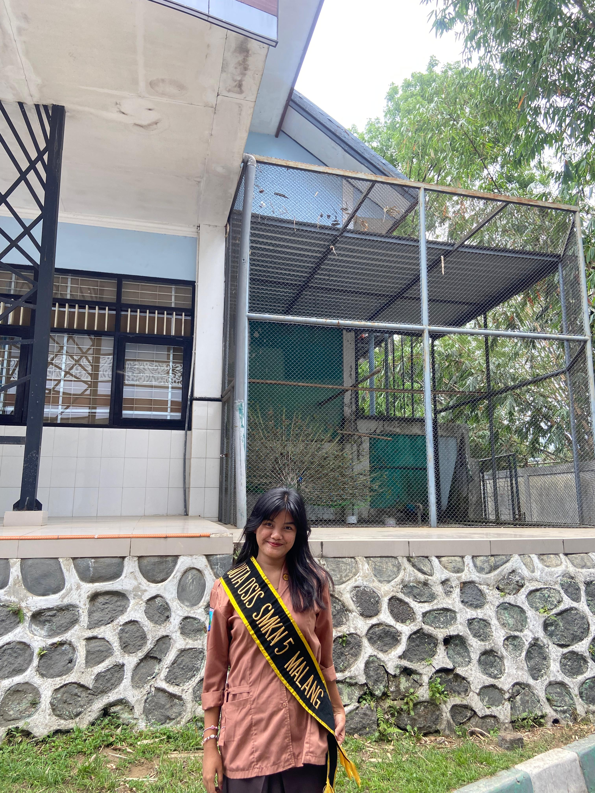
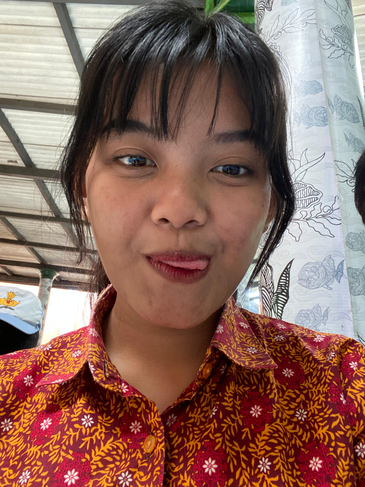
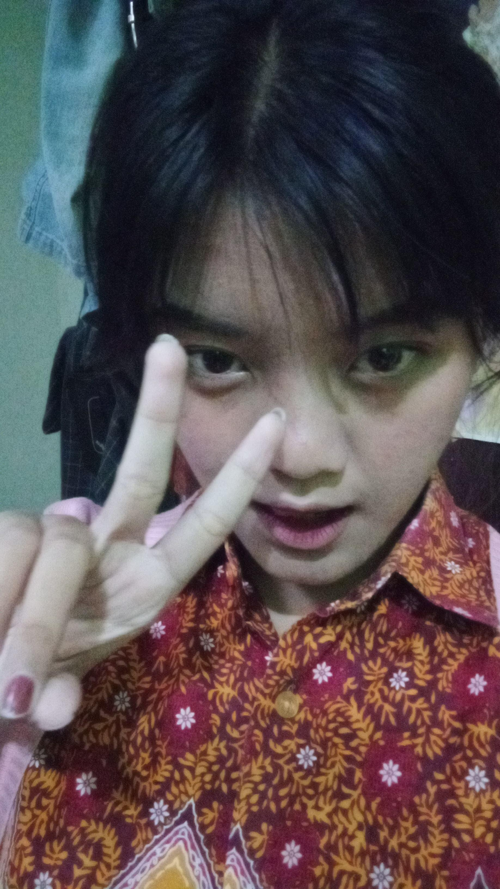
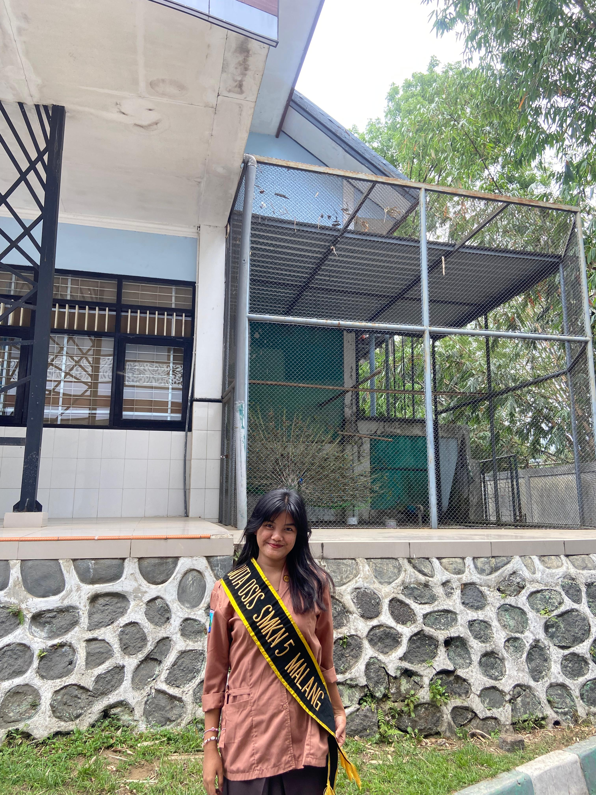
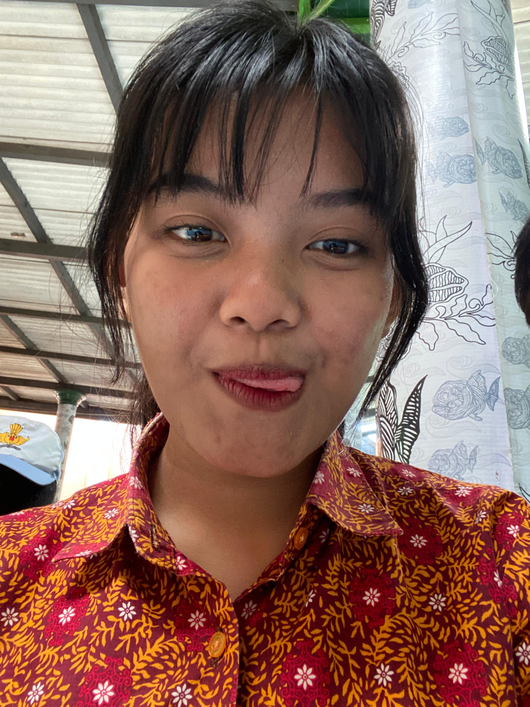
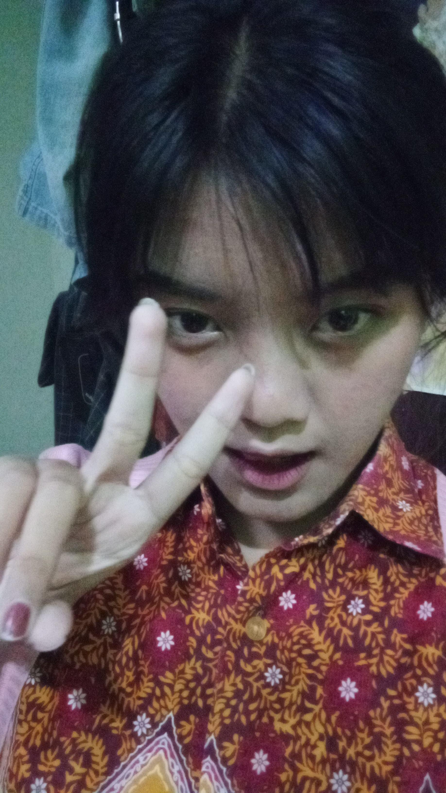

Hai, Pacarku Cintaku Bububku Rizkaku🌸🌸
Rizka, aku tahu kamu sedang marah dan mungkin saat ini merasa kecewa. Aku ingin meminta maaf dari lubuk hatiku yang terdalam 💖. Aku tahu mungkin kata-kataku atau tindakanku telah menyakiti hatimu, tapi itu bukanlah niatku sama sekali. Kamu adalah orang yang sangat berharga bagiku 💖, dan aku sangat menghargai setiap momen yang kita habiskan bersama.
Aku berharap kamu bisa memaafkanku dan memberikan kesempatan untuk memperbaiki kesalahanku 💖. Aku siap mendengarkan apa pun yang ingin kamu katakan, dan aku akan berusaha lebih baik ke depannya. Jangan marah terus ya, aku sangat menyesal dan tidak ingin kita jauh seperti ini 💖. Kamu tahu betapa pentingnya kamu dalam hidupku 💖.
 




